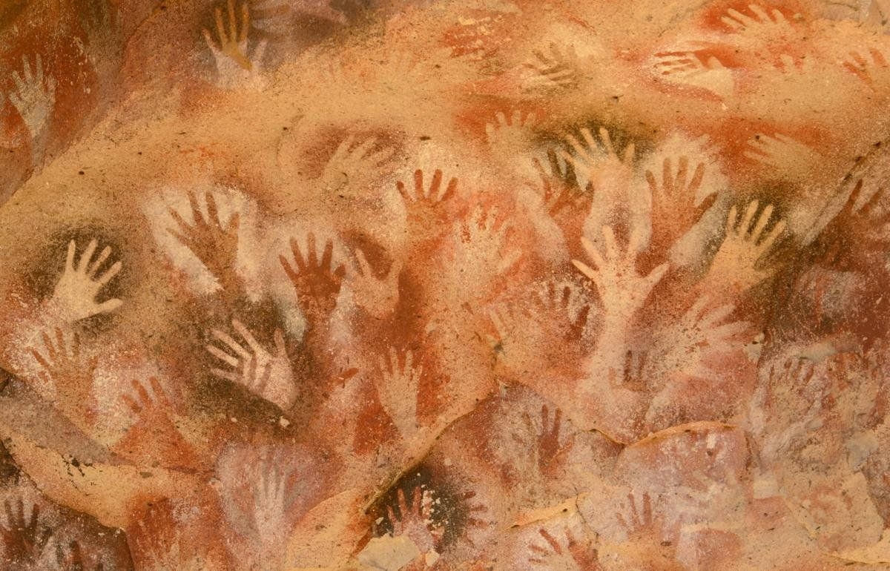

The study of Human History is often organized into major eras, each defined by transformative technological, social, and cultural developments.
These periods—Prehistoric, Ancient, Post-Classical, Early Modern, and Modern—provide a framework for understanding humanity’s evolution across millions of years.
Grounded in archaeological and historical evidence, this timeline highlights key milestones while acknowledging regional variations and the limitations of Eurocentric periodization.
The following overview aims to present these eras concisely, balancing scholarly precision with accessibility.
Listed below :-
1. Prehistoric Era (c. 3.3 million years ago–c. 3300 BCE)

Parietal hands in Lascaux, Southern France.
Definition:Encompasses human and hominin activity before written records, starting with the earliest stone tools.
This era is studied through archaeological finds like tools, fossils, and art.
Subdivisions and Key Developments :
Paleolithic (Old Stone Age, c. 3.3 million–10,000 BCE)
a.) Timeline and Evidence:
Earliest tools: Lomekwian stone tools (Kenya, 3.3 million years ago), attributed to early hominins (e.g., Australopithecus).
Oldowan tools (2.6 million–1.7 million years ago), found in Gona, Ethiopia, used by Homo habilis for cutting and scraping.
Acheulean handaxes (1.76 million–100,000 years ago), associated with Homo erectus, found across Africa, Europe, and Asia.
Control of fire: Evidence at Wonderwerk Cave, South Africa (c. 1 million years ago), and Qesem Cave (c. 400,000 years ago).
Upper Paleolithic (c. 50,000–10,000 BCE): Emergence of Homo sapiens, with complex tools (e.g., blades, burins) and art (e.g., Lascaux Cave paintings, France, c. 17,000 BCE).
b.) Population Data: Estimated global population of Homo sapiens by 10,000 BCE: ~1–10 million (based on genetic studies and archaeological site density).
c.) Social Structure: Small, mobile hunter-gatherer bands (20–50 individuals), egalitarian, with evidence of trade (e.g., obsidian tools found 100+ km from source).
d.) Key Sites: Blombos Cave, South Africa (engraved ochre, c. 75,000 BCE); Chauvet Cave, France (art, c. 30,000 BCE).
Mesolithic (Middle Stone Age, c. 10,000–6000 BCE)
a.) Timeline and Evidence:
Transition post-Last Glacial Maximum (c. 20,000–10,000 BCE).
Microlith tools (e.g., Star Carr, England, c. 8500 BCE) for hunting and fishing.
Early sedentism: Natufian culture (Levant, c. 12,500–9500 BCE) with proto-agriculture.
b.) Key Developments: Domestication of dogs (e.g., Bonn-Oberkassel, Germany, c. 14,700 BCE).
c.) Population Data: Global population likely doubled to ~5–20 million due to resource stability.
Neolithic (New Stone Age, c. 10,000–3300 BCE)
a.) Timeline and Evidence:
Neolithic Revolution: Independent origins of agriculture in Fertile Crescent (c. 10,000 BCE, wheat, barley), China (c. 7000 BCE, rice, millet), Mesoamerica (c. 6000 BCE, maize), and Andes (c. 5000 BCE, potatoes).
Çatalhöyük, Turkey (c. 7100–5700 BCE): Proto-urban settlement with ~5,000–10,000 residents.
b.) Key Developments: Pottery (e.g., Jomon culture, Japan, c. 10,000 BCE), weaving, and permanent settlements.
c.) Population Data: Global population grew to ~50 million by 3300 BCE due to agricultural surplus.
* Critique: The term “Prehistoric” implies a lack of complexity, yet Göbekli Tepe and other sites show sophisticated social organization. Regional variations (e.g., African pastoralism vs. Mesoamerican horticulture) challenge universal timelines.
2.) Ancient History (c. 3300 BCE–500 CE)
Mohenjo Daro : Indus Valley civilization.Clay Tablets : Ancient Mesopotamian Civilization.
Definition:Begins with writing (cuneiform in Sumer, c. 3300 BCE) and ends with the fall of the Western Roman Empire (476 CE). Marked by urban civilizations and complex societies.
Subdivisions and Key Developments :
Bronze Age (c. 3300–1200 BCE)
a.) Timeline and Evidence:
Mesopotamia: Sumerian city-states (e.g., Uruk, c. 4000 BCE) with ziggurats; cuneiform on clay tablets (e.g., Epic of Gilgamesh, c. 2100 BCE).
Egypt: Old Kingdom (c. 2686–2181 BCE), pyramids of Giza (c. 2630 BCE).
Indus Valley: Harappa and Mohenjo-Daro (c. 2600–1900 BCE), urban planning with drainage systems.
China: Shang Dynasty (c. 1600–1046 BCE), oracle bone inscriptions (earliest Chinese writing).
b.) Key Developments: Bronze metallurgy, wheeled vehicles (e.g., Mesopotamia, c. 3500 BCE), and trade networks (e.g., lapis lazuli from Afghanistan to Egypt).
c.) Population Data: Mesopotamia’s urban centers (e.g., Ur, c. 2000 BCE) had ~50,000 residents; global population ~100 million by 1200 BCE.
Iron Age (c. 1200–500 BCE)
a.) Timeline and Evidence:
Iron smelting: Earliest evidence in Anatolia (c. 1800 BCE), widespread by 1200 BCE.
Collapse of Bronze Age civilizations (c. 1200–1100 BCE), possibly due to invasions, climate change, or trade disruptions.
b.) Key Developments: Spread of religions (Buddhism, Jainism, Christianity), mathematics (Euclid’s Elements, c. 300 BCE), and astronomy (Ptolemy, c. 150 CE).
Population Data: Global population ~200–300 million by 1 CE (Roman Empire: ~50 million; Han China: ~60 million).
* Critique: Focus on Mediterranean and Chinese civilizations often overshadows African kingdoms (e.g., Aksum, c. 100 CE) and Mesoamerican cultures (e.g., Olmec, c. 1200–400 BCE).
Writing-centric definitions exclude complex oral societies.
3.) Post-Classical Era (c. 500–1500 CE)
Definition: From the fall of the Western Roman Empire to the Renaissance, characterized by global trade networks, religious expansion, and technological diffusion.
Key Developments :
a.) Timeline and Evidence:
Islamic Golden Age (c. 750–1258 CE): Abbasid Caliphate, House of Wisdom in Baghdad, advances in algebra (Al-Khwārizmī, c. 820 CE), and optics (Ibn al-Haytham, c. 1000 CE).
China: Tang (618–907 CE) and Song Dynasties (960–1279 CE), gunpowder (c. 850 CE), movable type (c. 1040 CE).
Europe: Feudalism, Viking Age (c. 793–1066 CE), Crusades (1095–1291 CE).
Africa: Great Zimbabwe (c. 1100–1450 CE), Mali Empire (c. 1235–1600 CE) with Timbuktu’s universities.
Enlightenment (c. 1685–1789 CE): Philosophers like Locke and Voltaire; ideas of liberty and reason.
b.) Population Data: Global population ~500 million by 1500 CE, ~700 million by 1800 CE; Americas’ indigenous population declined ~80–90% (50–100 million) due to disease and conquest.
c.) Key Developments: Global trade (e.g., Columbian Exchange), Protestant Reformation (1517), and rise of nation-states.
* Critique: Eurocentric focus on Renaissance and Enlightenment marginalizes the devastation of colonialism and contributions of non-Western societies (e.g., Mughal India’s economy, ~25% of global GDP in 1700 CE).
5.) Modern Era (c. 1800–present)
Definition: From the Industrial Revolution to the present, defined by rapid technological, political, and social transformations.
Urbanization: London’s population grew from 1 million (1800) to 6.7 million (1900).
b.) Impact: Global GDP per capita rose from ~$1,000 (1800) to ~$2,000 (1900, in 1990 USD).
Age of Revolutions (c. 1760–1848)
a.) Timeline and Evidence: American Revolution (1776), French Revolution (1789), Haitian Revolution (1791–1804).
b.) Impact: Spread of democratic ideals and abolition of slavery in some regions.
Honorary: World War I (28 July 1914 – 11 November 1918)
Contemporary Era (c. 1945–present)
a.) Timeline and Evidence:
World War II (1939–1945): ~70–85 million deaths (~3% of global population).
Cold War (1947–1991): Space Race (Sputnik, 1957; Apollo 11, 1969).
First artificial satellite ever launched into Earth’s orbit: Sputnik-1.First crewed mission to land on the Moon: Apollo-11.
Information Age (c. 1980–present): Internet (ARPANET, 1969; World Wide Web, 1989), smartphones (iPhone, 2007).
AI development: Deep Blue beats Kasparov (1997), AlphaGo defeats Lee Sedol (2016).
Gary Kasparov vs. Deep Blue.
b.) Population Data: Global population: 2.5 billion (1950), 8 billion (2022).
c.) Key Developments: Decolonization (e.g., India, 1947), civil rights movements, climate change awareness (IPCC, 1988).
* Critique: The “modern” label assumes linear progress, ignoring ongoing inequalities and environmental crises. The Information Age’s start is debated (1970s vs. 1990s), and future historians may redefine this era based on AI or ecological shifts.